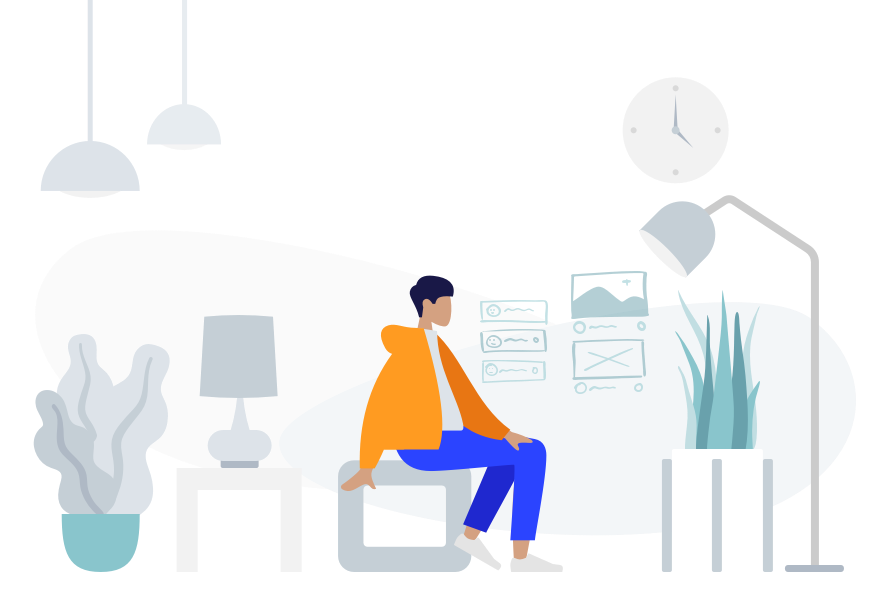
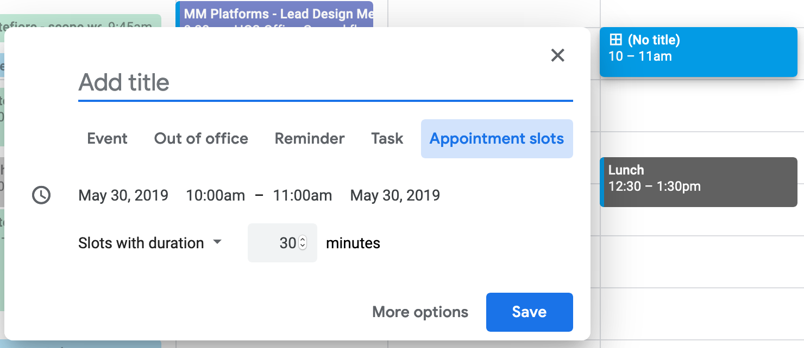
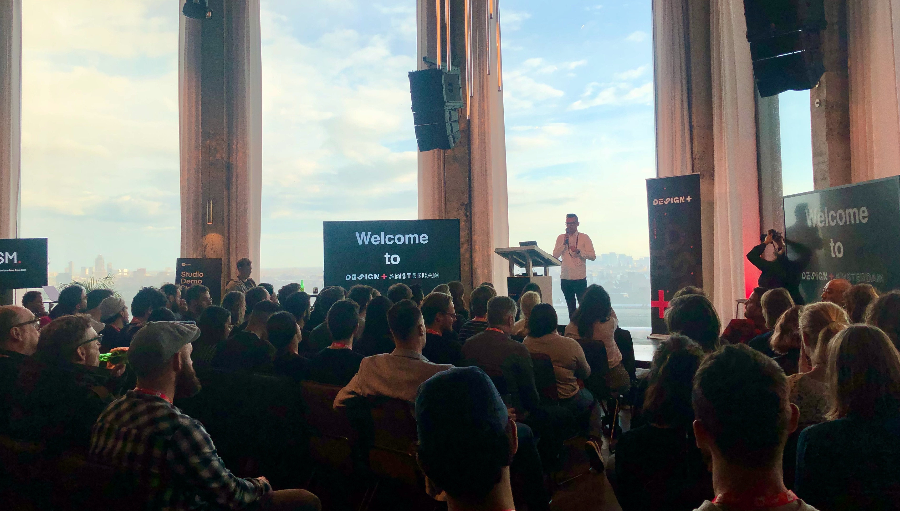

For the las 5 months I worked remotely. As the first UX employee working on this model I had to find the best way to work in this way and also try to change the companies dynamics towards making this work. Here are some of my learnings during this process.

Illustration using Humaaaans by Pablo StanleyYour office
Find the best location and setup to do your work. Based on your personality you could find it difficult to work from home, tempted to stay in bed, or doing chores, a co-working space could be the best scenario for you. In my case, I enjoyed working from home, because it allowed me to configure my setup, cook my own meals and have more time for actual work and less on commute. The down side is I didn’t get to see people, which I tried to solve outside office hours (see “create a network” further down this list).
If you go for the “home office” approach, be sure to have a proper chair, a good monitor, and a good webcam (yes I know it sounds very 90’s, but I swear its important). Here is the best webcam for video conferencing according to John Maeda
Don’t be afraid to ask your employer to pay for the co-working space or reimburse some of the expenses associated to your home office.
Establish a work routine
What I mean by this, is to find what works for you. Working remotely can make it harder to either start working or stop. So try to determine in what schedule you are more productive, when can you collaborate with the rest of the company and when to take brakes.
Before, when I worked at the office, I would stand up regularly to go to meetings, and changed the type of task and activities based on what I had scheduled for the day (I also got interrupted a lot…but let’s not get into that). Being remote I also had meetings but they were hang out calls, which meant sitting at my desk longer and strained eyes.
What I learned is that is important to schedule your day in blocks that allowed to switch the type of task, or simply how you do them, sitting in another place, going out to a cafe, a library or just simply standing up for the next call made a huge difference. For more info on how to defrag your calendar I recommend this post from Lara Hogan.
Also, try to find stuff to do as transition between tasks. Cooking was good for me (I’m sure I read this tip somewhere but can’t remember where).
Working remotely doesn’t mean that you can’t have a commute, and for some people is important to have it to get into “work mode”. Pablo Stanley talks about this in a podcast called “breadtime” (i wanted to add the link but the url is now broken, google it…maybe you will find it).

Google calendar appointment slotsVisibility and collaboration
Keep your calendar updated and visible. Block time for your work so you have a better understanding of how you will spend your time and let others know what you are working on. It’s also important to reserve slots that are available to meet with others. Google Calendar allows you to define blocks of time that are free for meeting with other people.
Collaboration requires tools! But also common sense.
Tools help a lot to communicate with other people when you are in different locations, and can help make more visible the work you do but they won’t solved everything if you don’t apply some common sense. Try to have check points regularly and don’t rely only on this tools to align and have clear expectations about the work you expect from others and communicate what you understand is your responsibility.
Don’t overthink it, pick up the phone and talk it out When you are by yourself, it’s easy to start second guessing and have doubts about how your work is being perceived, or why some decision were made. If you have some doubts try to clarify them as soon as possible, and if it’s on a call way better. Somehow the email and text being asynchronous opened too much room for interpretation and more second guessing.

Invision Design Leadership meet upCreate a network
If you, like me, work from home, you will find yourself longing human interaction (maybe not, and that’s ok too). In order to compensate I joined several meet-up groups related to UX that would allow me to meet different people and also learn new things. Here are some ways to foster social interaction:
- Work from a co-working space.
- Join meet-ups in your city.
- Do non-work related activities (join a sports team, a dancing group, book club or whatever you fancy).
Resources
Here are some resources if you want to dig deeper on the subject:
- Remote UX Work: The NN/g Case Study
- The state of remote work 2019 - Buffer
- Remote, office not required - Basecamp
- Happy Tools - Automattic
As a closing thought, it’s important for me to let you know that Working Remotely is not the same as being on vacation all year long, and I think it’s not for everyone. Make sure it aligns well with your personality, and the company you work for has the dynamics in place to make it work. The things I missed the most was working alongside talented people, the magic that comes from random encounters and the growth that comes from collective knowledge and collaboration.